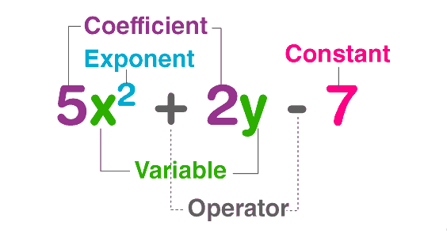

Многочлени
Многочлен - алгебрагічна сума кількох одночленів.
Наприклад:
3xy + ab + 2;
(7x^2)b - 2xy + a;
Одночлени, з яких складається многочлен, називають його членами. Одночлен – окремий вид многочлена. Многочлен, який містить два або три доданки, називають відповідно двочленом або тричленом.
Наприклад:
a^2-b^2, x+y - двочлени;
a+ab+b, x^2+xy-y^2 - тричлени.
Подібні члени многочлена – це однакові одночлени, або одночлени, запис яких у стандартному вигляді відрізняється лише коефіцієнтами.
Наприклад:
у многочлені
15(a^2)b+3ab^2-7(a^2)b+5ab^2
перший і третій, другий і четвертий члени подібні.
Зведення подібних членів – це спрощення многочлена, коли алгебрагічна сума подібних членів замінюється одним членом. Щоб звести подібні члени, треба додати їх коефіцієнти і результат помножити на їх спільну буквену частину.
Наприклад:
15(a^2)b+3ab^2-7(a^2)b+5ab^2 =
=8(a^2)b+8ab^2.
Стандартний вигляд многочлена – це запис многочлена, усі члени якого мають стандартний вигляд і серед них немає подібних.
Наприклад:
a^2-ab+b^2, ab+bc+ac
- многочлени стандартного вигляду, а
3a^2+2b^2-3ab+a^2
- многочлен нестандартного вигляду.
Степенем многочлена стандартного вигляду називають найбільший зі степенів одночленів, із яких складається многочлен. Степенем довільного многочлена називають степінь тотожно рівного йому многочлена стандартного вигляду.
Наприклад:
степінь многочлена
5(a^7)b+5ab^5-2(a^5)(b^5)
дорівнює степеню одночлена 2(a^5)(b^5),
тобто 5+5=10.
Дії над многочленами
При додаванні многочленів користуються правилом розкриття дужок: якщо перед дужками стоїть знак «+», то дужки можна опустити, зберігши знаки кожного одночлена.
Наприклад:
(3x^2-2x+5)+(6x^2+5x-3)=
=3x^2-2x+5+6x^2+5x-3=
9x^2+3x+2
При відніманні многочленів користуються правилом розкриття дужок: якщо перед дужками стоїть знак «-», то дужки можна опустити, змінивши знак кожного одночлена, що містився в дужках, на протилежний.
Наприклад:
(3x^2-2x+5)-(6x^2+5x-3)=
=3x^2-2x+5-6x^2-5x+3=
-3x^2-7x+8
Щоб записати алгебрагічну суму кількох многочленів як многочлен стандартного вигляду, треба розкрити дужки і звести подібні члени.
Наприклад:
(2x^2-3x+2)-(3x^2-2x-1)-
-x^2+2x+1+(-2x^2+x-1)=
=2x^2-3x+2-3x^2+2x+1+x^2-2x-1-2x^2+x-1=
-2x^2-2x+1
Щоб помножити одночлен на многочлен, треба кожний член многочлена помножити на цей одночлен й одержані одночлени додати.
Наприклад:
3a(a^2-2a+ab)=
=3a^3-6a^2+3a^2b.
Щоб помножити многочлен на многочлен, треба кожний член одного многочлена помножити на кожний член другого многочлена й одержані многочлени додати.
Наприклад:
(3x-2)(2x-3)=
=6x^2-9x-4x+6=
6x^2-13x+6
Щоб розділити многочлен на одночлен, треба кожний член многочлена розділити на цей многочлен й одержані результати додати.
Наприклад:
(5x^7-2x^5+3x^2+6x)/2x=
=5(x^7)/2x-2(x^5)/2x+3(x^2)/2x+6x/2x=
=2,5x^6-x^4+1,5x+3
Розкладанням многочлена на множники називають запис многочлена у вигляді добутку многочленів.
Наприклад:
2ax+6ay=2a(x+3y).
При розкладанні многочлена на множники використовують такі способи.
1. Винесення спільного множника за дужки.
Наприклад: 5x^2+10=5x(x+2).
2. Спосіб групування
Наприклад: 3x-3y-x^2+xy=
(3x-3y)-(x^2-xy)=3(x-y)-x(x-y)=(x-y)(3-x)
3. Використання формул скороченого множення.